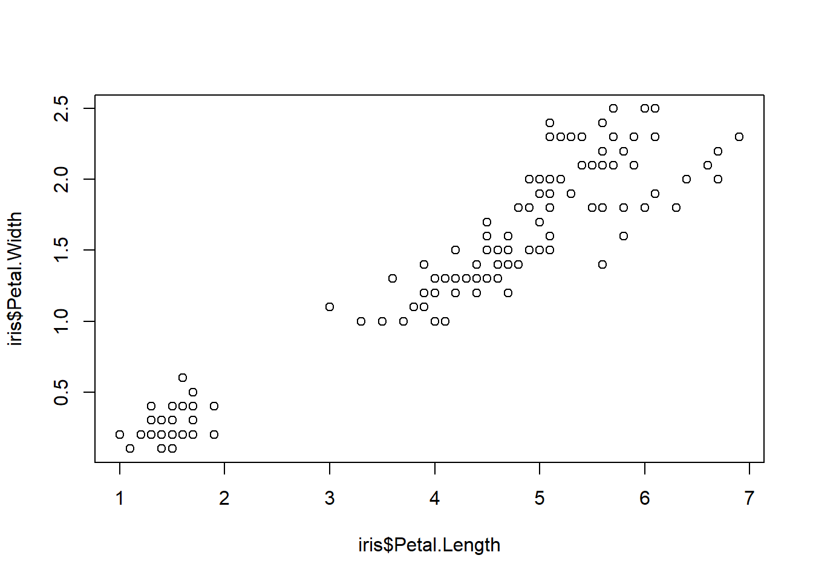
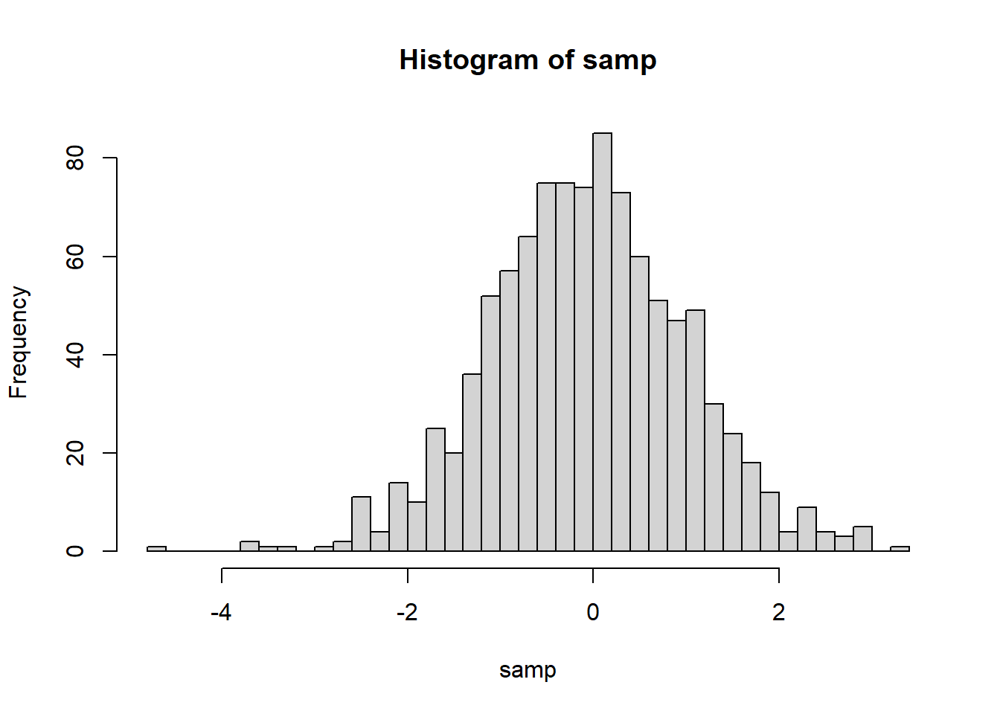

Graphics
We can visualize data in R using the graphics package. Graphics package is part of the standard distribution so there is no need to install or load it to the session.
Contents here are based on “R cookbook: Proven recipes for data analysis, statistics, and graphics” by Paul Teetor (2011).
There are many other packages we can use. For example, ggplot2, the so-called “Grammar of Graphics”. It is said to be easier to construct and customize plots and the graphics are generelly more attractive. For more information on how to use ggplot2, see https://rc2e.com/graphics.
Notes on Graphics Functions
There are two levels of graphics function.
- High-level graphics function
- It starts a new graph, sets the scale, draws some adornment, and renders the graphic.
- Examples include: plot(), boxplot(), hist(), qqnorm(), curve()
- Low-level graphics function
- It adds something to an existing graph e.g. points, lines, text, adornments.
- Examples include: points(), lines(), abline(), segments(), polygon(), text()
Creating a Scatterplot
Scatter plot is a quick way to see the relationship between \(x\) and \(y\).
plot(cars$speed, cars$dist)
If the data set contains only two columns, it is even easier.
plot(cars)
Note that the axis label changed.
Adding a Title and Labels
Now we want to specify a title to the plot and add labels for the axes.
plot(cars,
main = "Speed VS Stopping distance (1920)",
xlab = "Speed (mph)",
ylab = "Stopping Distance (ft)")
Creating a Scatter Plot for Multiple Groups
If we want to distinguish one group from another, we may plot multiple groups in one scatter plot. Let’s do this using iris data set.
head(iris)## Sepal.Length Sepal.Width Petal.Length Petal.Width Species
## 1 5.1 3.5 1.4 0.2 setosa
## 2 4.9 3.0 1.4 0.2 setosa
## 3 4.7 3.2 1.3 0.2 setosa
## 4 4.6 3.1 1.5 0.2 setosa
## 5 5.0 3.6 1.4 0.2 setosa
## 6 5.4 3.9 1.7 0.4 setosaplot(iris$Petal.Length, iris$Petal.Width)
We can add identifier to the groups using pch argument.
plot(iris$Petal.Length, iris$Petal.Width,
pch = as.integer(iris$Species)) #Besides pch, you may use colWe can also modify the point types.
symbol <- c(0,15,25)
pointVec <- symbol[as.integer(iris$Species)]
plot(iris$Petal.Length, iris$Petal.Width,
pch = pointVec)Adding a Legend
legend() is one of the low-level graphic functions. Therefore, we need to call legend() after calling plot().
plot(iris$Petal.Length, iris$Petal.Width,
pch = as.integer(iris$Species))
legend(1, 2.5, #Coordinates of the legend box
c("Setosa", "Versicolor", "Virginica"), #labels
pch = 1:3) #must be consistent with the argument in plot()Plotting regression line
We want to add a line that illustrates linear regrssion of data points. abline() is also a low-level graphic function.
m <- lm(data = cars, dist ~ 1 + speed)
plot(cars, main = "Speed VS Stopping distance (1920)",
xlab = "Speed (mph)",
ylab = "Stopping Distance (ft)")
abline(m)Creating a histogram
We may plot histogram of numeric values. Suppose we want to plot a t-distribution with degree of freedom 25.
set.seed(2020) #set seed to ensure each draw yields the same numbers
samp <- rt(1000,25) #draw 1000 obs from t distribution with df=25
hist(samp)
We may suggest the number of bins by including a second argument in hist().
hist(samp, 50,
xlab = "samp", main = "Histogram of samp")We may add a density estimate to a histogram with line()
hist(samp, 50,
xlab = "samp", main = "Histogram of samp",
### <b>
prob = T)
lines(density(samp)) #density() computes kernel density### </b>Writing your plot to a file
Saving your plot involves three steps
- Call a function to open a new graphic file, e.g. png(), jpeg(), pdf()
- Call plot and its friends to generate the graphics image.
- Call dev.off to close the graphics file.
The file will be written to your current working directory.
pdf("samp.pdf")
hist(samp, 20, prob = T)
lines(density(samp))
dev.off()Best Practices for Data Visualization
- Everything on your graph should be labeled.
- The title should be short and clear.
- Each axis must be labeled. Unit of measurement should be included. - The legend must be short and informative e.g. Male and Female, not 0 and 1
- Be minimal. Don’t include elements that are not necessary.
- e.g. 3-D effect, background color
- Choose color schemes carefully.
- sequential - for plotting a quantitative variable that goes from low to high
- diverging - for contrasting the extremes (low, medium, and high) of a quantitative variable
- qualitative - for distinguishing among the levels of a categorical variable
- RColorBrewer is a useful package for color schemes
Font Issue in plot()
Mac users may have encountered this warning message: no font could be found for family “Arial” when using plot().
You may solve it by doing the following: 1. Go to Finder. 2. Search for “Font Book” and open it. 3. Look for the Arial font and, if it is grayed out, turn it on.